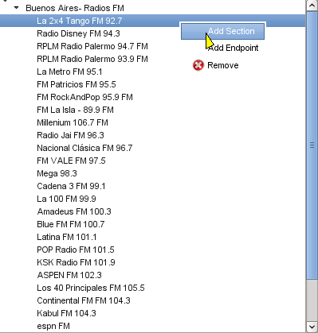
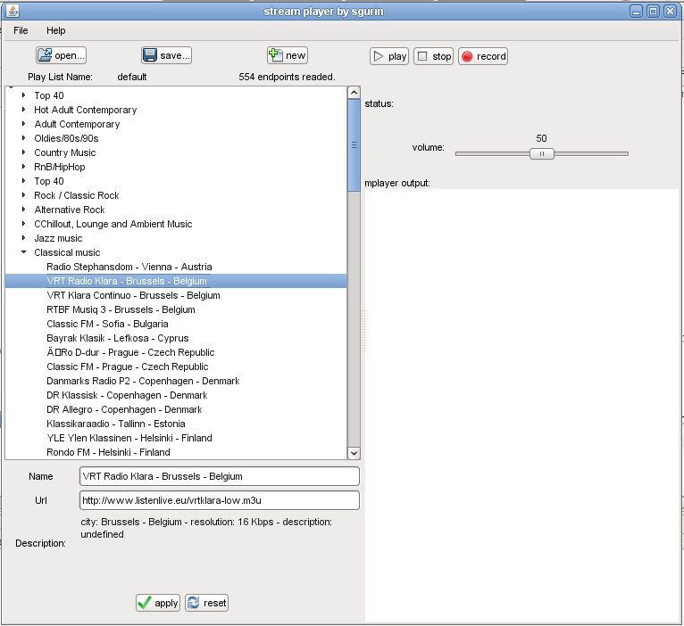

Important: I hope you can find your country's favourite radio in the catalog. However, if not, you can always create your own playlists with your favourite radios and share them with the world.
This is a radio and tv stream player. This program includes
There are available several playlist, for example: radios from europe (all countries), radios from europe categorized, radios from north america, south america and others. For editing the current playlist, just right click for adding new radios or sections, and drag and drop for changin the node's order:

